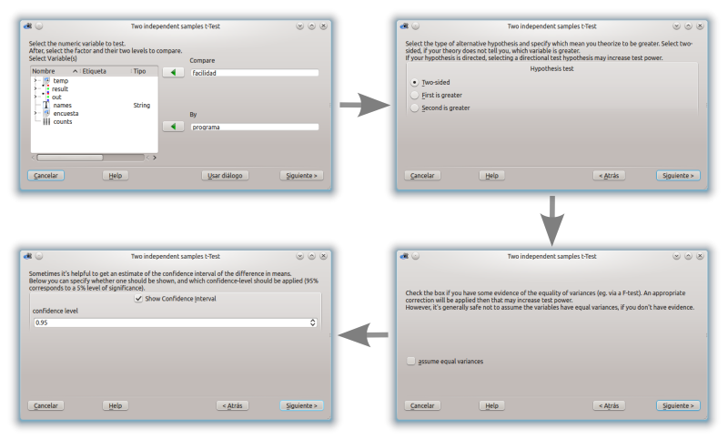
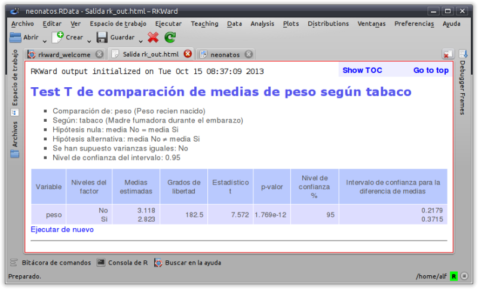

¿Qué es RKTeaching?
RKTeaching es un paquete de R que proporciona un plugin para la interfaz gráfica RKWard añadiendo nuevos menús y cuadros de diálogo especialmente diseñandos para la enseñanza de Estadística.
El paquete ha sido desarrollado y es mantenido por Alfredo Sánchez Alberca asalber@ceu.es del Departamento de Matemáticas de la Universidad San Pablo CEU de Madrid.
Si descubre algún error o tiene cualquier sugerencia, por favor, envíeselo por correo al autor o bien indíquelo como un issue en Github.
Instalación
Requisitos previos: 1. Tener instalado R. Puede descargarse desde http://www.r-project.org/. 2. Tener instalado RKWard. Puede descargarse desde http://rkward.sourceforge.net/.
La mejor forma de instalar RKTeaching desde este repositorio es utilizando el paquete de R devtools. Los pasos a seguir, utilizando R en línea de comandos son:
-
Instalar el paquete
devtools(si no lo tienes ya instalado):install.package('devtools') -
Cargar el paquete
devtools:library(devtools) -
Instalar RKTeaching desde el repositorio de Github:
install_github("asalber/rkTeaching_es")
Procedimientos estadísticos
Una vez instalado, al arrancar RKWard aparecerá un nuevo menú Teaching con los siguientes procedimientos estadísticos:
-
Manipulación de datos
- Filtrar datos
- Calcular variable
- Recodificar variable
- Ponderar datos
- Tipificar variables
-
Distribución de frecuencias
- Tablas de frecuencias
- Tablas de frecuencias bidimensionales
-
Gráficos
- Diagrama de barras
- Histograma
- Diagrama de sectores
- Diagrama de caja
- Diagrama de medias
- Diagrama de interacción
- Diagrama de dispersión
- Matriz de dispersión
-
Estadística descriptiva
- Estadísticos
- Estadísticos (cálculo detallado)
-
Regresión
- Regresión lineal
- Regresión no lineal
- Comparación de modelos
- Predicciones
- Correlación
-
Test paramétricos
-
Medias
- Test T para una muestra
- Test T para dos muestras independientes
- Test T para dos muestras pareadas
- ANOVA
- Cálculo del tamaño muestral para la media
- Cálculo del tamaño muestral para el test T
-
Varianzas
- Test F de Fisher
- Test de Levene
-
Proporciones
- Test para una proporción
- Test para dos proporciones
- Cálculo del tamaño muestral para una proproción
-
Test no paramétricos
-
Normalidad
- Test de Lilliefors (Komogorov-Smirnov)
- Test de Shapiro-Wilk
-
Test U de Mann-Whitney para dos muestas independientes
-
Test de Wilcoxon para dos muestras pareadas
-
Test de Kruskal-Wallis para varias muestras independientes
-
Test de Friedman para medidas repetidas
-
Test Chi-cuadrado de independencia
-
Test Chi-cuadrado de bondad de ajuste
-
Concordancia
- Coeficiente de correlación intraclase
- Kappa de Cohen
-
Distribuciones de probabilidad
-
Distribuciones discretas
-
Binomial
- Probabilidades
- Cuantiles
- Gráfico de probabilidad
-
Poisson
- Probabilidades
- Cuantiles
- Gráfico de probabilidad
-
Distribuciones continuas
-
Chi-cuadrado
- Probabilidades
- Cuantiles
- Gráfico de probabilidad
-
F de Fisher
- Probabilidades
- Cuantiles
- Gráfico de probabilidad
-
Normal
- Probabilidades
- Cuantiles
- Gráfico de probabilidad
-
T de student
- Probabilidades
- Cuantiles
- Gráfico de probabilidad
-
Uniforme continua
- Probabilidades
- Cuantiles
- Gráfico de probabilidad
-
Simulaciones
- Lanzamiento de monedas
- Lanzamiento de dados
- Ley de los casos raros
Funcionalidades
-
Menús y cuadros de diálogo diseñados para facilitar el aprendizaje, eliminando todas las opciones secundarias para conseguir una interfaz simple e intuitiva.
-
Diseño de asistentes que guían al usuario paso a paso y le asesoran en los análisis estadísticos. 
-
Salidas en HTML que presentan los resultados de los análisis y sus interpretaciones de manera clara y concisa. 
-
Gráficos sencillos basados en el moderno paquete ggplot2.

-
Posibilidad mostrar el desarrollo de los cálculos de algunos procedimientos estadísticos.

RKTeaching es mantenido por asalber